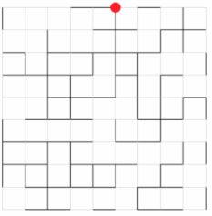
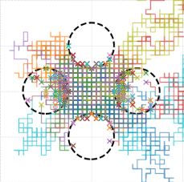
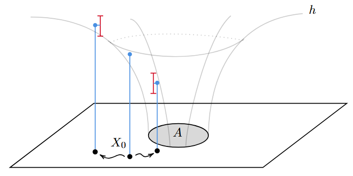

Academic Writings
Here I may post longer pieces of writing that are not course notes. There's not a lot to see for now, since I've only just started my PhD.
Research & Longer Projects

Bachelor’s Thesis
My undergraduate thesis. This project was a bit of a passion project for me, where I studied mathematically the Ray Marching algorithm and applied it to make great pictures of fractals. Along the way I formalised a few concepts which were already known amongst practicioners.

Master’s Project (Part III Essay)
My Master's Project (called Part III at Cambridge). This project talks about random walks on dynamical percolation. The project is a survey of a few recent papers.

Reading Course Report
A short reading course report written during my PhD, on the topic of Feynman-Kac path measures and the application of this framework to variance reduction techniques such as Sequential Monte Carlo among others.

Reading Course Report
A report on importance splitting methods for variance reduction in MC simulation of rare events. Includes original work on the Weight Windows algorithm.